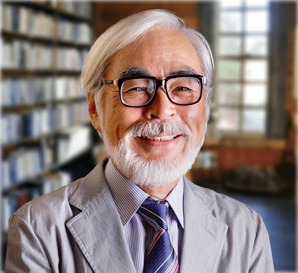
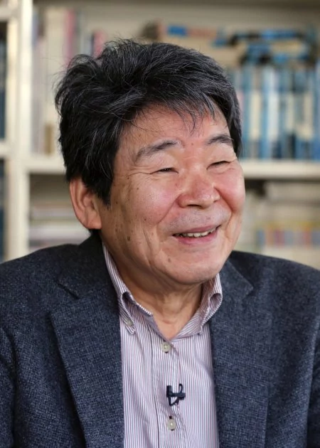
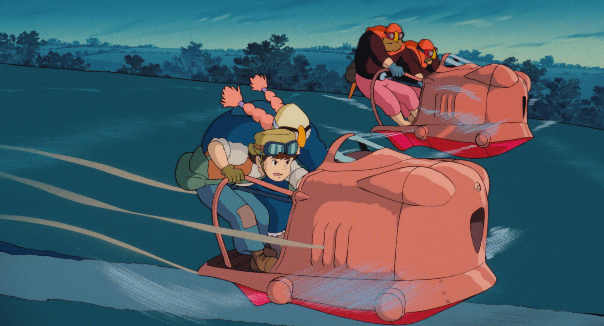
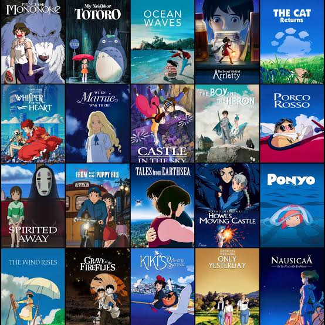

About Studio Ghibli
Studio Ghibli was founded in 1985 by Hayao Miyazaki and Isao Takahata. The name Studio Ghibli was inspired by an Italian aircraft, the Caproni Ca.309 Ghibli. They are known for their beautiful, hand-drawn anime that combines Japanese folklore with European aesthetics and landscapes. Their films have a strong sense of magic and wonder while also being grounded in reality. The themes of their films often revolve around enduring hardship while maintaining a sense of wonder and magic.

About Miyazaki and Takahata
Miyazaki and Takahata are both directors. Before Studio Ghibli was founded, Miyazaki directed Lupin III: The Castle of Cagliostro in 1979. He later directed Nausicaä of the Valley of the Wind in 1984, which is often considered a Studio Ghibli film and is included in their film library, despite being released a year before the studio was established.

Takahata worked on several shows before Studio Ghibli and worked with Toei Animation, Zuiyo Animation and Telecom Animation. Takahata and Miyazaki co-directed the TV series Lupin the III, and worked on several other short films. He was also the producer of Nausicaä of the Valley of the Wind.
Miyazaki has a passion for aviation, so aircrafts and other flying machines are often featured in his films, reflecting this interest. While Miyazaki is known for his imaginative worlds, magical elements, and flying machines, Takahata is known for his more diverse animation styles, often focusing on daily life, history, and emotional impact. Together, their different approaches helped shape Studio Ghibli’s distinctive identity.

Popular Films

The studio’s first official film was Castle in the Sky (1986), directed by Hayao Miyazaki. This was followed by Grave of the Fireflies (1988), directed by Isao Takahata, which received a 100% score on Rotten Tomatoes. That same year, Studio Ghibli released My Neighbor Totoro (1988), which became famous for its iconic character, Totoro. Several films later, Studio Ghibli partnered with Disney to distribute its films internationally, helping bring its animation to a wider audience. Shortly after, the studio released Princess Mononoke (1997). Then, in 2001, it produced Spirited Away, which became one of its best-known films and won several awards for its animation and storytelling. Studio Ghibli has continued to produce many notable films since, including Howl’s Moving Castle (2004), Ponyo (2008), The Wind Rises (2013), and its most recent feature film, The Boy and the Heron (2023).
Translation Difficulties
After Nausicaä of the Valley of the Wind was poorly translated and heavily edited for its initial English-language release, Miyazaki and the studio adopted a strict no-cuts policy to protect the original versions of their films. This policy was famously reinforced when producer Toshio Suzuki sent a replica samurai sword to Harvey Weinstein with the message “No Cuts,” emphasizing the studio’s refusal to allow its films to be edited for international distribution. The studio was very hesitant to work internationally until it's partnership with Disney, launching it to international audiences.